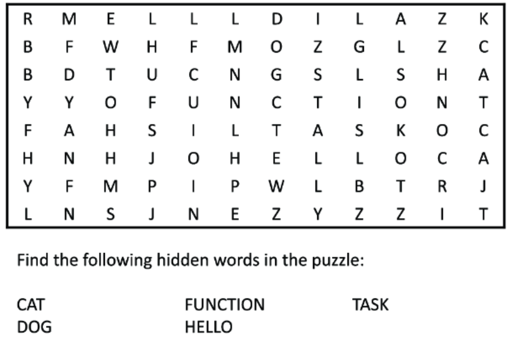
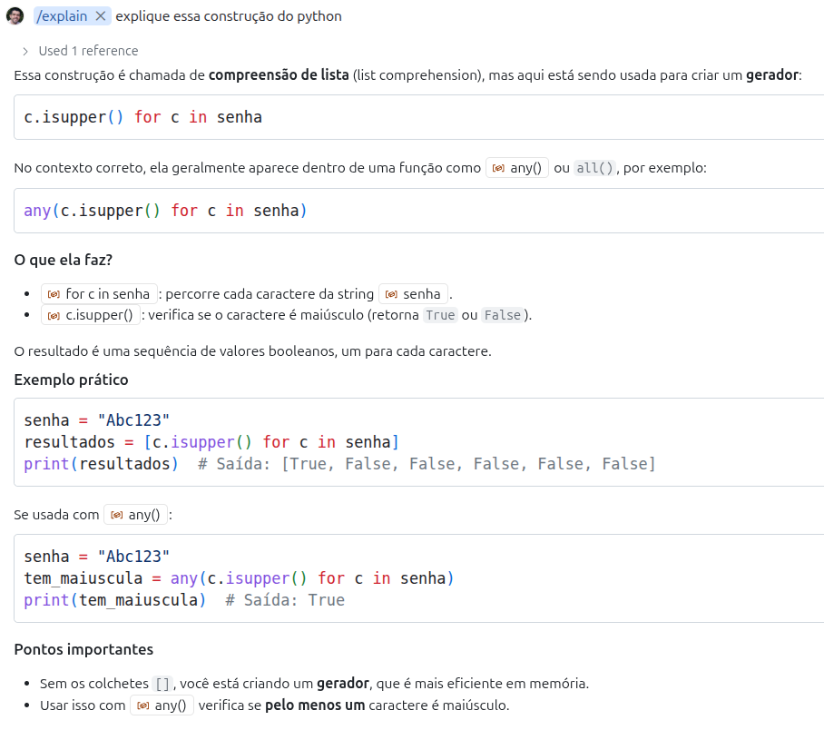

Projetando Funções
PASIA - Aula T.2
DAC - ICET - Universidade Federal de Lavras
16/08/2025
O conteúdo dessa aula é baseado no capítulo 3 do livro abaixo.

Pela pesquisa de perfil da turma vi que alguns alunos conhecem bem Python e outros não.
- É importante então apresentar a linguagem nas primeiras aulas.
- Mas, junto com a apresentação da linguagem, vou apresentar também boas práticas e dicas de uso do Copilot.
Espero então que a aula seja útil para todos :)
Introdução
Um dos desafios para programadores iniciantes usarem o Copilot
- é saber o que é uma tarefa razoável para que ele consiga gerar uma boa solução.
Como já mencionamos antes, passar uma tarefa muito grande para o Assistente de IA
- pode fazer com que ele falhe
- e falhe de uma forma que seja muito difícil de corrigir.
Na verdade essa questão de complexidade não é um problema só para o Copilot, mas para nós mesmos.
- Engenheiros de Software que tentam resolver problemas muito complexos sem quebrá-los em partes menores também falham.
Existem diversas formas de tratar, no código, a decomosição de um problema em partes.
- A mais simples delas é a através de funções.
Uma função é um trecho de código que resolve uma tarefa específicia
- E que não é tão complexo a ponto de ficar difícil de implementar e testar.
Claro que vocês já sabem o que são funções e como elas podem ser implementadas.
- Mas será que vocês sabem quais são os critérios para projetar boas funções?
- Será pensam nisso na hora de programar, ou simplesmente saem programando?
- Além disso, no contexto do uso de IA, quais seriam as melhores práticas para projetar funções?
Funções
Uma função é uma pequena tarefa que pode ser usada para resolver tarefas maiores.
- Essas tarefas maiores, por sua vez, podem ser usadas para resolver tarefas maiores ainda.
Para exemplificar, encontre as palavras abaixo no quebra-cabeça.

Qual foi o raciocínio que você usou para encontrar as palavras?
- Procurar todas as palavras de uma vez é uma tarefa muito grande e complicada.
Você poderia, por exemplo, escolher uma palavra para encontrar primeiro.
- E, para encontrar uma única palavra, poderíamos procurar a primeira letra.
- E então procurar a palavra buscando para a direita, esquerda, para cima ou para baixo.
Repare que estamos decompondo o problema de resolver o caça-palavras
- em tarefas menores, que, se resolvidas, nos ajudam a resolver o problema como um todo.
É essa a estratégia que precisamos seguir na hora de programar.
Uma função pode ser vista como um contrato.
- Se existir uma função
maiore for dito que ela recebe dois números e retorna o maior deles, - nós podemos acreditar que se a função for chamada com os números 2 e 5, ela retornará 5.
- Nós não precisamos saber como a função funciona para utilizá-la.
- Da mesma forma que não precisamos entender de mecânica de carros para frear um carro.
- Nós acionamos o pedal e sabemos que a velocidade do carro vai diminuir.
Na aula passada usamos o Copilot para gerar código a partir de um comentário.
- Podemos fazer o mesmo para criar funções.
Esse é um possível resultado gerado pelo Copilot.
# escreva uma função que retorna o
# maior de dois números
# a entrada são dois números
# e a saída é o maior entre eles
def maior_numero(a, b):
if a > b:
return a
else:
return b- Note que assinatura de uma função em python começa com a palavra-chave
def.- É isso que diz para o Python que o que vem a seguir é uma função.
- Depois vem o nome da função (
maior_numero, nesse caso).- Dica: se parecer difícil escolher um nome para a função, pode ser um sinal de que ela está fazendo muitas coisas.
# escreva uma função que retorna o
# maior de dois números
# a entrada são dois números
# e a saída é o maior entre eles
def maior_numero(a, b):
if a > b:
return a
else:
return b- Em seguida, temos os parâmetros da função, que são as entradas que ela recebe.
- Por fim, temos o corpo da função, que é onde a lógica é implementada.
- Uma função pode retornar valores ou não.
- Quando ela retorna usamos a palavra-chave
return.
# escreva uma função que retorna o
# maior de dois números
# a entrada são dois números
# e a saída é o maior entre eles
def maior_numero(a, b):
if a > b:
return a
else:
return bVeja que, diferente de linguagens fortemente tipadas, em Python não precisamos especificar os tipos
- nem dos parâmetros e nem do retorno da função.
Funções (dicas avançadas)
Dica para programadores avançados:
- Apesar de Python não ser fortemente tipado
- é uma boa prática usar anotações de tipo (type hints) para melhorar a legibilidade do código.
- Isso ajuda muito na implementação de sistemas maiores.
- Mas afinal, o que é isso?
Vamos gerar novamente a função maior_numero, mas agora com type hints.
As anotações de tipo servem como documentação e podem ser utilizadas por ferramentas de análise sintática.
- Ou seja, são úteis para dizer para outros programadores o que exatamente a função espera e o que retorna.
- E, principalmente, para que as IDEs, como o VS Code, apontem possíveis erros antes mesmo de rodar o código.
- Isso melhora a qualidade do código e facilita a manutenção.
Experimente, por exemplo, chamar a função no VS Code passando uma string.
Mas é importante deixar claro que os type hints não alteram o comportamento do código.
- Como Python não é uma linguagem compilada, o código vai ser executado
- e os type hints são ignorados em tempo de execução.
- Ou seja, se a função for chamada passando um parâmetro de tipo errado
- isso não causará um erro imediatamente, mas pode levar a comportamentos inesperados.
- Na verdade quando dá erro é até melhor, o problema maior é quando passa batido.
Criando funções com Copilot
Nós havíamos passado para o Copilot a tarefa de criar a função completa.
- Mas outra forma de usar o Copilot é nós mesmos definirmos a assinatura da função
- E pedirmos ao Copilot apenas para implementar o corpo da função.
- Isso geralmente leva a resultados melhores.
Nós podemos fazer isso usando docstrings.
- Docstrings são strings de documentação que podem ser usadas para descrever o que uma função faz.
- Elas são definidas logo abaixo da assinatura da função e são delimitadas por três aspas duplas.
Dica
É uma boa prática escrever docstrings para suas funções.
Nós poderíamos então gerar a função maior_numero de forma diferente
- Escrevendo nós mesmos o cabeçalho e a docstring da função.
- E deixando o Copilot gerar o corpo da função.
- O que torna a geração do código mais fácil para o Copilot.
Vamos então refazer a função, mas agora nós definimos o cabeçalho e docstring da função.
O Copilot pode então gerar o corpo da função.
Para terminar, vamos pedir ao Copilot para chamar a função que criamos.
O ciclo de projeto de funções com Copilot.
- Defina o comportamento desejado para a função
- Escreva um prompt que descreva a função
- Deixe o Copilot gerar o código
- Avalie o código para conferir se ele parece razoável
- Teste o código para conferir se ele está correto
- Se estiver correto, a função está pronta.
- Se não estiver, volte ao passo 2.
Exemplos de boas funções com Copilot
Investimentos em Bolsa do Tião
Tião é um investidor em uma ação chamada PASIA.
- Ele comprou 10 ações por R$ 15.
- Agora cada ação vale R$ 17.
- Ele quer saber quanto lucro teria se vendesse as ações agora.
Essa seria uma boa função para calcular o lucro do Tião?
Não, essa função não é boa.
- Por que?
Quando criamos uma função devemos criá-la da forma mais geral possível.
- Com isso, a função pode ser reutilizada em diferentes contextos.
- Repare que, no caso do Tião, ele não quer saber o lucro apenas de uma compra específica
- mas sim de qualquer compra que ele faça.
Mesmo que você ache que isso parece muito simples.
- É muito comum que programadores experientes repitam esse erro em contextos mais complexos.
Como deveria ser a assinatura da função, de forma que ela seja mais útil?
- Quais parâmetros deveria receber?
- a quantidade de ações compradas
- o valor que as ações foram compradas
- e o preço de venda das ações.
- a quantidade de ações compradas
Seguindo a estratégia que vimos antes,
- vamos criar uma docstring para explicar ao Copilot o que a ação precisa fazer.
Dica
Claro que essa função é muito simples e você poderia pedir ao Copilot para criar inclusive a assinatura e a docstring.
Mas a ideia aqui é que você entenda o processo com uma função simples, para que depois possa aplicar para funções mais complexas.
Podemos agora pedir ao Copilot para gerar o corpo da função.
Nós já fizemos os três passos iniciais do ciclo de design de funções.
- Defina o comportamento desejado para a função
- Escreva um prompt que descreva a função
- Deixe o Copilot gerar o código
- Avalie o código para conferir se ele parece razoável
- Teste o código para conferir se ele está correto
O próximo passo é avaliar se o código parece razoável.
Em uma função simples, assim esse passo é fácil :)
O passo seguinte é testar o código.
- E aqui vai uma dica interessante de uso do VS Code para testar códigos Python.
Você pode selecionar o código da função no VS Code.
- E apertar Shift + Enter
- Ao fazer isso, o trecho de código selecionado será executado em um terminal Python.
- E você poderá então fazer chamadas de teste a essa função no terminal Python.
Um primeiro teste óbvio que poderíamos fazer
- é calcular o lucro da compra específica de ações do Tião.
Está certo?
- Sim, como ele teve 2 reais de lucro em cada ação e são 10 ações, o total é 20.
Precisamos agora pensar em mais casos de testes.
Testar se as ações tivessem subido para R$ 18 em vez de R$ 17 seria um bom teste?
- Não, porque seria um teste de um caso na mesma categoria do teste anterior.
- Precisamos pensar em situações diferentes.
Por exemplo:
- Uma situação que desse prejuízo.
- Ou que as ações permanecessem no mesmo preço.
Podemos inverter o preço de compra e o atual para testar o prejuízo.
Mas como saber quantas categorias testar?
- Como ter certeza se dois testes não são da mesma categoria?
- Ou se eles cobrem todas categorias possíveis?
Testes são uma combinação de ciência 🧪 e arte 🎨
- É necessário prática e experiência para definir bem casos de testes.
- E vamos ter aula específica sobre isso mais adiante na disciplina.
A senha do Tião
Tião está se inscrevendo em uma nova rede social chamada ProgrammersKingdom.
- Ele quer ter certeza que a senha que ele vai usar é forte o suficiente.
Vamos começar com uma definição bem simples do que é uma senha forte.
- E depois vamos melhorar a função.
- No meio do caminho vamos nos acostumando com a sintaxe do Python.
A princípio, vamos considerar que uma senha é forte se ela não for '1234' ou 'senha'.
- Vamos então definir o cabeçalho e a docstring de uma função que recebe uma possível senha e retorna se ela é forte ou não.
Suponha que seja esse o código gerado.
Seguindo próximo passo do ciclo de design de funções, avaliamos se o código parece razoável.
- O que acha?
Vamos agora testar a função usando Shift + Enter no VS Code.
'admin' claramente não é uma senha forte 🙂
Vamos melhorar a definição da nossa função.
def eh_senha_forte(senha):
"""
Uma senha é forte se não for '1234' ou 'senha' ou 'admin'
Retorna True se a senha for forte e False em caso contrário
"""
if senha in ['1234', 'senha', 'admin']:
return False
return TrueRepare que, nesse caso, o Copilot gerou um código que usa uma lista.
- Podemos declarar listas em Python entre colchetes e com valores separados por vírgulas.
- E o operador
inindica se um elemento pertence à lista.
O código parece razoável? Hora de testar!
Mas nossa função ainda aceita 'Tião' como senha, o que é claramente ruim.
- Vamos então deixar a definição de senha forte, mais forte 💪.
def eh_senha_forte(senha):
"""
Uma senha forte tem pelo menos uma letra maiúscula,
uma letra minúscula, um número e um caractere especial.
Retorna True se a senha for forte e False em caso contrário
""" tem_maiuscula = any(c.isupper() for c in senha)
tem_minuscula = any(c.islower() for c in senha)
tem_numero = any(c.isdigit() for c in senha)
tem_especial = any(not c.isalnum() for c in senha)
return tem_maiuscula and tem_minuscula and tem_numero and tem_especialO código gerado pelo Copilot parece bem claro sobre o que está fazendo no geral.
- Mas há construções de Python que podem ser melhor exploradas.
Vamos pedir ao Copilot para explicar o trecho c.isupper() for c in senha.
- Para isso, aperte Ctrl + I e digite
explique essa construção do python.
Essa é uma possível resposta do Copilot.

Esse é um bom exemplo de como o Copilot pode nos ajudar a entender um código já implementado.